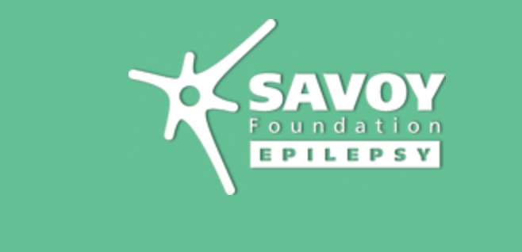

Early diagnosis and effective treatment of uncontrolled epilepsy are currently the most pressing clinical problems that entail distinct largely unresolved challenges along the course of the disorder: Firstly, despite the ability of MRI to diagnose epileptogenic lesions, imaging markers of drug-resistance are currently not known. As a result, patients often undergo decade-long drug trials before being referred to tertiary centers for pre- surgical investigation. Secondly, in surgical candidates, as much as 50% present with only subtle lesions that remain undetected through standard radiological analysis. The lack of MRI criteria to localize the lesion weights heavily against surgery. Though quantitative MRI assessments have improved detection of subtle lesions, these tools are available only in specialized research environments, and have not been scaled nor validated to operate across sites. Thirdly, a subgroup of patients who undergo surgery will nevertheless experience seizure recurrence. Although it is generally believed that studying the anatomical markup of an individual patient may lend markers of outcome, patient-to-patient variability likely impacts prognosis, challenging the discovery of robust predictors of outcome. To increase the sensitivity of MRI in detecting subtle structural and functional alterations, validate findings across sites, and address individual variability, 14 leading epilepsy neuroimaging research centers have initiated the Epilepsy Neuroimaging Data Exchange (ENDEX). The overall goal of this grass-root consortium, the first open-access initiative in epilepsy, is to fruitfully aggregate and openly share neuroimaging datasets along with phenotypic information from at least 2,000 patients with various epileptic syndromes and 1,000 age- and sex-matched healthy controls.
We have received test datasets from the following sites so far:
We gratefully acknowledge the following sources of funding:
We gratefully acknowledge the following sources of funding: 
NEUROIMAGING OF EPILEPSY LAB Montreal Neurological Institute and Hospital 3801 University Street, Montreal, QC, H3A 2B4, Canada andrea@bic.mni.mcgil.ca neda@bic.mni.mcgil.ca boris@bic.mni.mcgil.ca